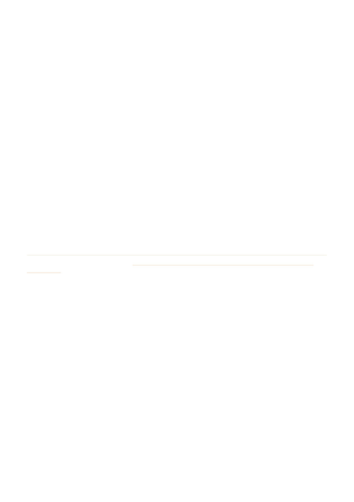

When you find the queen, despatch her, then return all frames to one box, add the lid and move the
brood box back to the original location to reassemble the hive and add the new queen.
At the original location, remove the lid, use some smoke as these are the feisty foraging bees and place
the honey super on the up turned lid.
Return the brood box to the original location and add the new queen. Remember to cut the appropriate
end of the cage so the candy plug is exposed and facing upwards. Place between frames towards the
middle and ensure it won't slip.
Add your queen excluder, honey super/s and lid.
Monitor for acceptance. Wait at least 5-7 days before checking the new queen has been released from
the cage and is laying eggs.
What happens if you did not find the queen?
One method is to spread a sheet in front of the hive up to the hive entrance before reuniting the brood box
and super. Shake all bees from the brood box onto the sheet.
Place a queen excluder on top of the hive base, then add the brood box with brood frames. The bees will
walk back into the hive to look after the brood. Scan for the queen on the sheet, but if you still can't find her,
she will follow the bees back into the hive. The workers will be able to move up through the queen excluder
back to the frames, but the queen (and drones) will be trapped between the base and queen excluder. Leave
the bees for an hour or so or until they have all returned to the box before removing the brood box and
queen excluder to check the base for the queen. Hopefully now she will be easy to see! Despatch her, add
the new queen and reassemble the hive.
Source: the Geelong Beekeepers Club website, geelongbeekeepersclub.org.au › Resources › General Beekeeping › Requeening an
8.
9.
10.
11.
12.
Geelong Beekeepers Club ∙ General Beekeeping
23